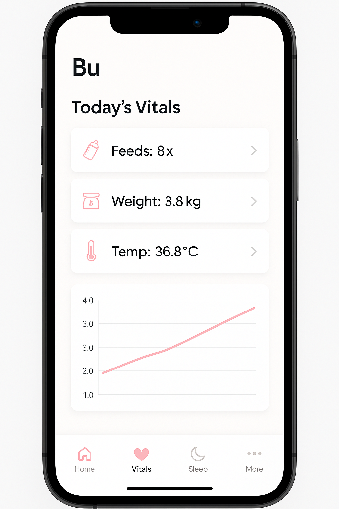

Bu
Newborn's Quiet Guardian
Medical records, AI insights, PDF reports. Everything you need to track your newborn's health in one minimalist app.
Get BuDaily Health Summary

Sleep, feeds, vitals, AI Q&A.
Everything in One Place
How It Works
What Parents Say
Start with Bu Today
Join thousands of parents who trust Bu for their newborn's health journey.